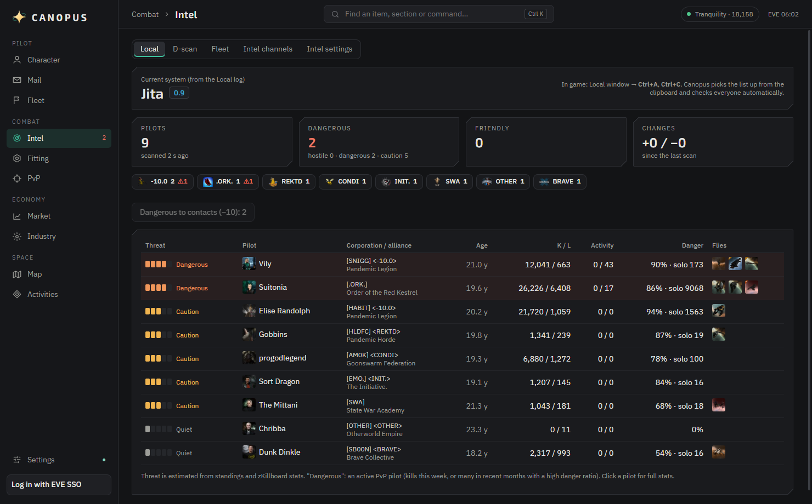
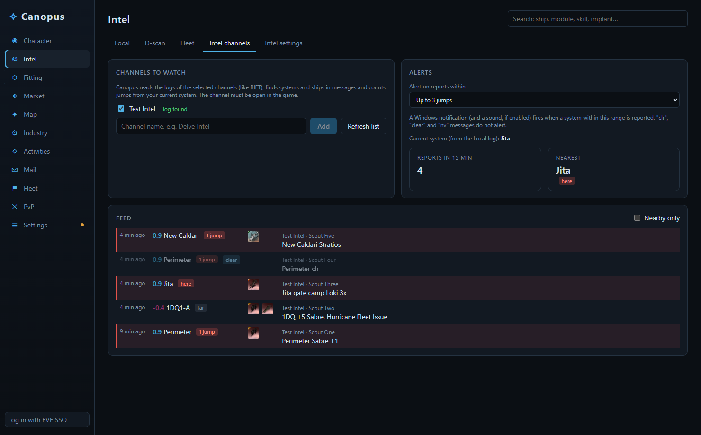
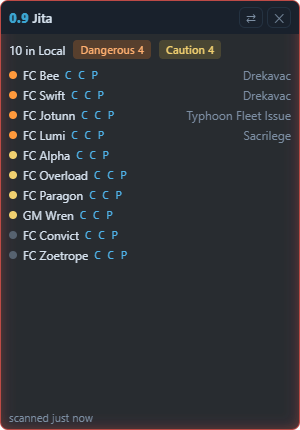

Intel and overlay
Copy Local and every pilot is checked. Canopus follows your alliance’s intel channels and tells you how many jumps away each report is — with an overlay over the game.
Local scan
Press Ctrl+A, Ctrl+C in the Local window: every pilot is checked for corporation, alliance, age, kills and losses, danger ratio and favourite ships.
- Threat shown as a meter with a word, not colour alone
- New arrivals highlighted; an alert in the app and a desktop notification when a dangerous pilot enters
- D-scan and fleet window analysis with warnings for interdictors, bombers, recons, logistics and capitals

Intel channels
Canopus follows your alliance’s intel chat logs, recognises systems (including shorthand like “1DQ”) and ships in every report and shows how many jumps away they are.
- Reports within your range raise an alert; “clr” and “nv” mean all clear
- Alerts in Discord — the same Local and intel alerts posted to your channel through a webhook

Overlay and mini-windows
An always-on-top overlay for windowed or borderless mode — Ctrl+Shift+L to show or hide, Ctrl+Shift+K for click-through — and small mini-windows over the game: timers of every character, a Jita price lookup, wallets.
- Multi-client previews: a live tile of every EVE client; click one or press a hotkey to bring it to the front. No keys or clicks are sent to the game.

Fight the battle before you undock
Free, no ads, no subscriptions. Windows, macOS and Linux — and a separate app for iPhone and iPad.